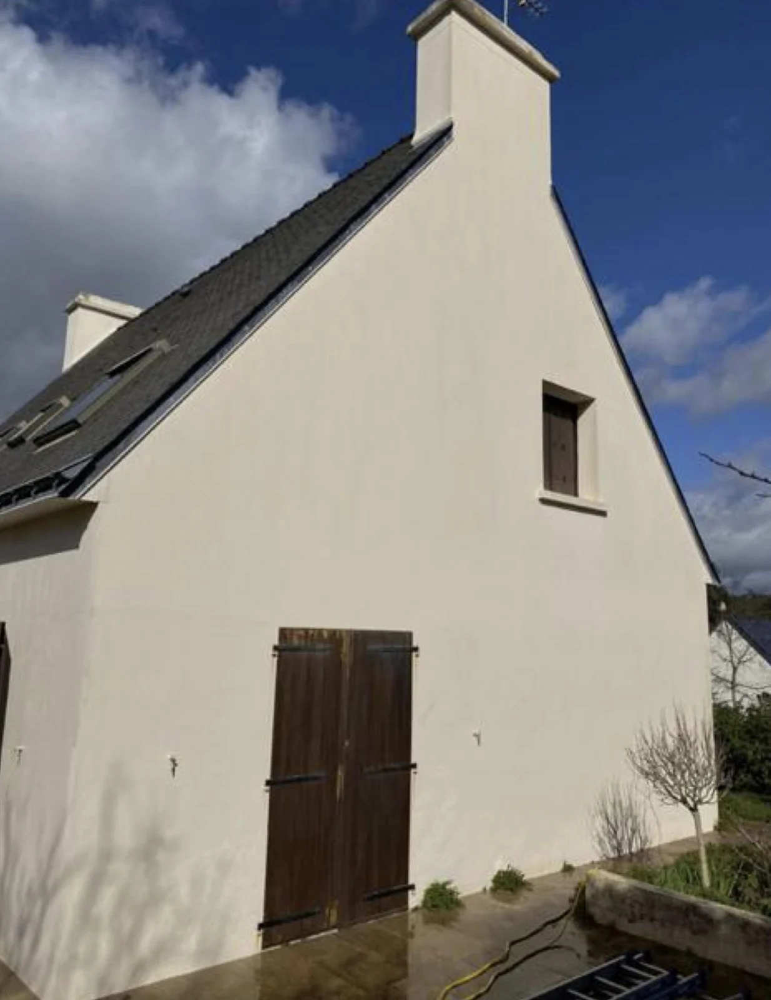
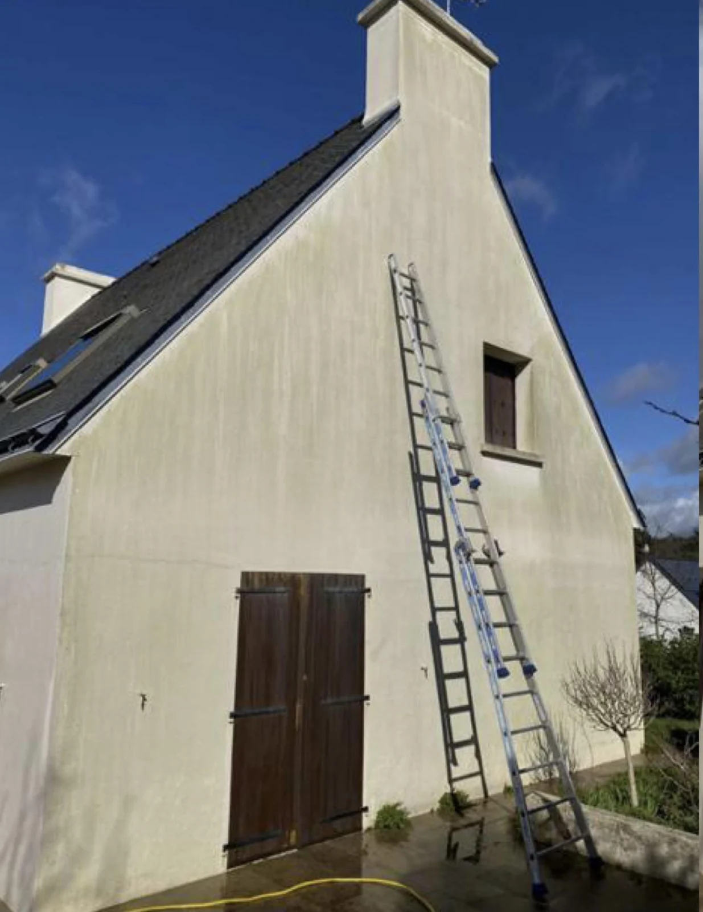

★★★★★
“Notre appartement a été entièrement repeint à Poitiers. Qualité irréprochable, équipe sympathique et prix tout à fait raisonnable. Très recommandé.”
Michel Garros08/05/2026
Peinture intérieure, rénovation de façade, nettoyage, traitement et couverture : MP Pro accompagne particuliers et professionnels à Poitiers et dans le Poitou-Charentes.
Basée à Poitiers, l’entreprise indique exercer depuis 2010. Avant les travaux, un relevé technique permet d’observer l’état du support et de définir une solution cohérente avec le projet.


Le nettoyage et le ravalement sont des travaux visuels : utilisez le curseur pour comparer l’état du support avant et après intervention.




Contactez MP Pro par téléphone, e-mail ou depuis la page Contact. L’entreprise se déplace sur le lieu des travaux afin d’évaluer les supports, comprendre votre besoin et établir un devis. Le déplacement et le devis sont annoncés comme gratuits.
L’entreprise est basée à Poitiers et indique intervenir dans le Poitou-Charentes, auprès des particuliers comme des professionnels.
Les prestations couvrent plusieurs postes : peinture intérieure, rénovation et protection des façades, nettoyage et traitement des extérieurs, ainsi que différents travaux de couverture. Le périmètre précis est confirmé après diagnostic.
Rassemblez si possible quelques photos, les surfaces concernées et vos priorités. Sur place, l’état des supports permet d’orienter vers la préparation, le traitement ou la finition la plus adaptée.
Pour une demande urgente, l’entreprise recommande de téléphoner directement afin d’expliquer la situation et de vérifier les possibilités d’intervention.
Expliquez votre besoin à MP Pro. Pour les demandes urgentes, privilégiez l’appel direct.
06 56 77 51 06 ↗Voir les horaires et l’adresse →